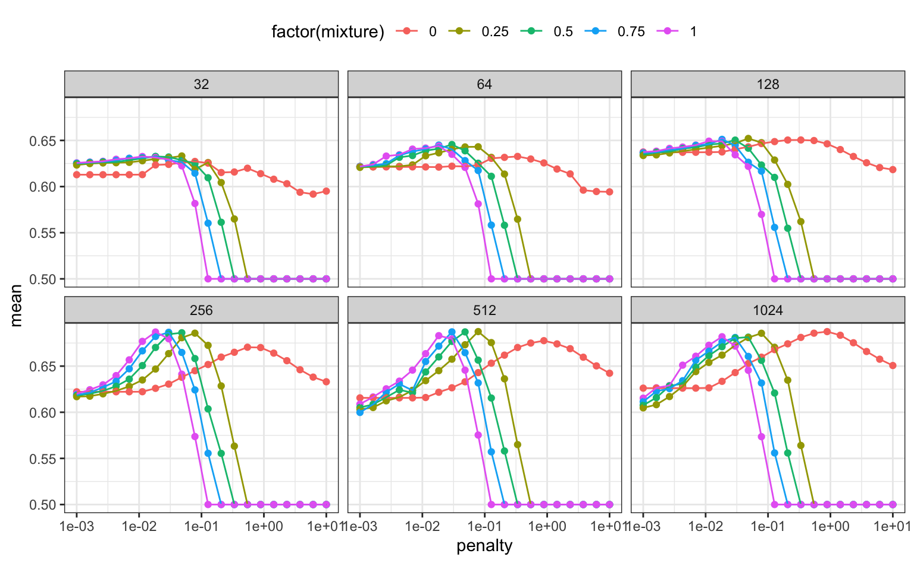
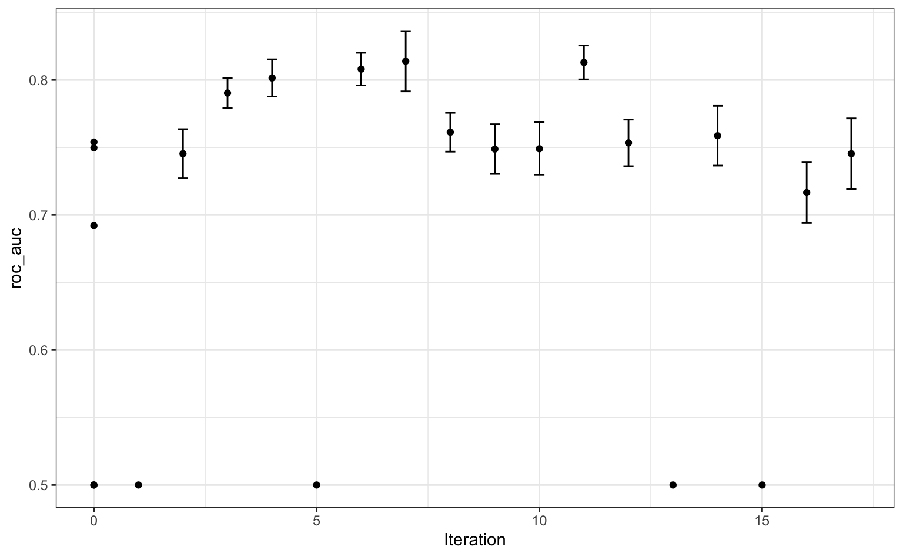
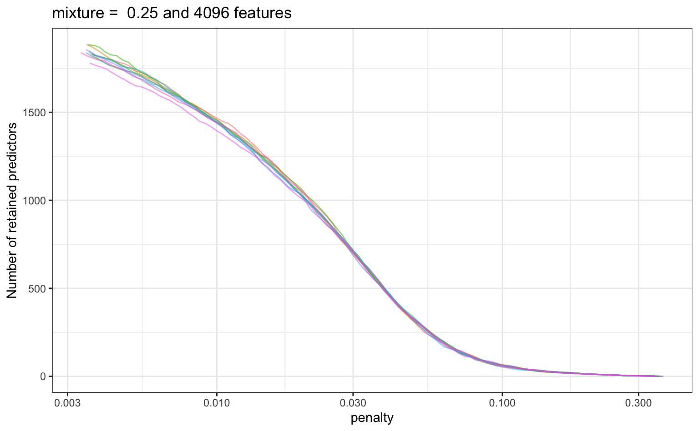

This advanced example shows how to process text data with recipes and use them in a predictive model. It also has an example of extracting information from each model fit for later use.
The data are from Amazon:
“This dataset consists of reviews of fine foods from amazon. The data span a period of more than 10 years, including all ~500,000 reviews up to October 2012. Reviews include product and user information, ratings, and a plaintext review.”
A small subset of the data are contained here; we sampled a single review from 5,000 random products and 80% of these data were used as the training set. The remaining 1,000 were used as the test set.
There is a column for the product, a column for the text of the review, and a factor column for a class variable. The outcome is whether the reviewer game the product a five-star rating or not.
library(tidymodels)
library(tune)
library(modeldata)
data("small_fine_foods")
training_data
#> # A tibble: 4,000 x 3
#> product review score
#> <chr> <chr> <fct>
#> 1 B000J0LSBG "this stuff is not stuffing its not good at all save yo… other
#> 2 B000EYLDYE "I absolutely LOVE this dried fruit. LOVE IT. Whenever I … great
#> 3 B0026LIO9A "GREAT DEAL, CONVENIENT TOO. Much cheaper than WalMart and… great
#> 4 B00473P8SK "Great flavor, we go through a ton of this sauce! I discove… great
#> 5 B001SAWTNM "This is excellent salsa/hot sauce, but you can get it for … great
#> 6 B000FAG90U "Again, this is the best dogfood out there. One suggestion… great
#> 7 B006BXTCEK "The box I received was filled with teas, hot chocolates, a… other
#> 8 B002GWH5OY "This is delicious coffee which compares favorably with muc… great
#> 9 B003R0MFYY "Don't let these little tiny cans fool you. They pack a lo… great
#> 10 B001EO5ZXI "One of the nicest, smoothest cup of chai I've made. Nice m… great
#> # … with 3,990 more rowsThe idea is to process the text data into features and use these features to predict whether the review was five-star or not.
The data processing steps are:
create an initial set of features based on simple word/character scores, such as the number of words, URLs and so on; The textfeatures will be used for this
the text is tokenized (i.e. broken into smaller components such as words)
stop words (such as “the”, “an”, etc.) are removed
tokens are stemmed to a common root where possible
tokens are converted to dummy variables via a signed, binary hash function
non-token features are optionally transformed to a more symmetric state using a Yeo-Johnson transformation
predictors with a single distinct value are removed
all predictors are centered and scaled.
Some of these steps may or may not be good ideas (such as stemming). In this process, the main tuning parameter will be the number of feature hash features to use.
A recipe will be used to implement this. We’ll also need some helper objects. For example, for the Yeo-Johnson transformation, we need to know the initial feature set:
library(textfeatures)
basics <- names(textfeatures:::count_functions)
head(basics)
#> [1] "n_words" "n_uq_words" "n_charS" "n_uq_charS" "n_digits"
#> [6] "n_hashtags"Also, the implementation of feature hashes does not produce binary values. This small function will help convert the scores to values of -1, 0, or 1:
The recipe is:
# uses the devel version of textrecipes
# devtools::install_github("tidymodels/textrecipes")
library(textrecipes)
pre_proc <-
recipe(score ~ product + review, data = training_data) %>%
# Do not use the product ID as a predictor
update_role(product, new_role = "id") %>%
# Make a copy of the raw text
step_mutate(review_raw = review) %>%
# Compute the initial features. This removes the `review_raw` column
step_textfeature(review_raw) %>%
# Make the feature names shorter
step_rename_at(
starts_with("textfeature_"),
fn = ~ gsub("textfeature_review_raw_", "", .)
) %>%
step_tokenize(review) %>%
step_stopwords(review) %>%
step_stem(review) %>%
# Here is where the tuning parameter is declared
step_texthash(review, signed = TRUE, num_terms = tune()) %>%
# Simplify these names
step_rename_at(starts_with("review_hash"), fn = ~ gsub("review_", "", .)) %>%
# Convert the features from counts to values of -1, 0, or 1
step_mutate_at(starts_with("hash"), fn = binary_hash) %>%
# Transform the initial feature set
step_YeoJohnson(one_of(!!basics)) %>%
step_zv(all_predictors()) %>%
step_normalize(all_predictors())Note that, when objects from the global environment are used, they are injected into the step objects via !!. For some parallel processing technologies, these objects may not be found by the worker processes.
To model these data, a regularized logistic regression model will be used:
Three tuning parameters should be trained for this data analysis.
There are enough data here such that 10-fold resampling would hold out 400 reviews at a time to estimate performance. Performance estimates using this many observations have sufficiently low noise to measure and tune models.
set.seed(8935)
folds <- vfold_cv(training_data)A regular grid is used. For glmnet models, evaluating penalty values is fairly cheap due to the use of the “submodel-trick”. The grid will use 20 penalty values, 5 mixture values, and 3 values for the number of hash features.
five_star_grid <-
expand.grid(
penalty = 10^seq(-3, 0, length = 20),
mixture = seq(0, 1, length = 5),
num_terms = 2^c(8, 10, 12)
)Note that, for each resample, the text processing recipe is only prepped 6 times. This increases the computational efficiency of the analysis by avoiding redundant work.
For illustration, we will save information on the number of predictors by penalty value for each glmnet model. This might help use understand how many features were used across the penalty values. An extraction function is used to do this:
glmnet_vars <- function(x) {
# `x` will be a workflow object
mod <- extract_model(x)
# `df` is the number of model terms for each penalty value
tibble(penalty = mod$lambda, num_vars = mod$df)
}
ctrl <- control_grid(extract = glmnet_vars)Finally, let’s run the grid search:
roc_scores <- metric_set(roc_auc)
set.seed(1559)
five_star_glmnet <-
tune_grid(pre_proc, lr_mod, resamples = folds, grid = five_star_grid,
metrics = roc_scores, control = ctrl)This took a while to complete. What did the results look like? Let’s get the resampling estimates of the area under the ROC curve for each tuning parameter:
grid_roc <-
collect_metrics(five_star_glmnet) %>%
arrange(desc(mean))
grid_roc
#> # A tibble: 300 x 8
#> penalty mixture num_terms .metric .estimator mean n std_err
#> <dbl> <dbl> <dbl> <chr> <chr> <dbl> <int> <dbl>
#> 1 0.0379 0.25 4096 roc_auc binary 0.816 10 0.00753
#> 2 0.0183 0.5 4096 roc_auc binary 0.814 10 0.00776
#> 3 0.0127 0.75 4096 roc_auc binary 0.814 10 0.00781
#> 4 0.00886 1 4096 roc_auc binary 0.813 10 0.00795
#> 5 0.0264 0.25 4096 roc_auc binary 0.813 10 0.00791
#> 6 0.0546 0.25 4096 roc_auc binary 0.811 10 0.00805
#> 7 0.0127 0.5 4096 roc_auc binary 0.811 10 0.00810
#> 8 0.00886 0.75 4096 roc_auc binary 0.810 10 0.00803
#> 9 0.0264 0.5 4096 roc_auc binary 0.810 10 0.00813
#> 10 0.0127 1 4096 roc_auc binary 0.810 10 0.00808
#> # … with 290 more rowsThe best results had a fairly high penalty value and focused on the ridge penalty (i.e. no feature selection via the lasso’s L1 penalty). The best solutions also used the largest number of hashing features.
What was the relationship between performance and the tuning parameters?
ggplot(grid_roc, aes(x = penalty, y = mean, col = factor(mixture), group = factor(mixture))) +
facet_wrap(~ num_terms) +
geom_point(cex = 1) +
geom_line() +
scale_x_log10() +
theme(legend.position = "top")
There is definitely an effect due to the number of features used1. The profiles with mixture values greater than zero had steep drop-offs in performance. What’s that about? Those are cases where the lasso penalty is removing too many (and perhaps all) features from the model2.
It’s clear from the panels at least 4096 features that there are several parameter combinations that have roughly equivalent performance. A case could be made to choose a larger mixture value and less of a penalty to select a more simplistic model that contains fewer predictors. If more experimentation were conducted, a largest set of features should also be considered.
We’ll come back to the extracted glmnet components at the end of this example.
What if we had started with Bayesian optimization? Would a good set of conditions have been found more efficiently?
Let’s pretend that we haven’t seen the grid search results. We’ll initialize the Gaussian process model with five tuning parameter combinations chosen with a space-filling design.
It might be good to use a custom dials object for the number of hash terms. The default object, num_terms(), uses a linear range and tries to set the upper bound of the parameter using the data. Instead, let’s create a parameter set, change the scale to be log2, and define the same range as was used in grid search.
hash_range <- num_terms(c(8, 12), trans = log2_trans())To use this, we have to merge the recipe and parsnip model object into a workflow:
library(workflows)
five_star_wflow <-
workflow() %>%
add_recipe(pre_proc) %>%
add_model(lr_mod)Then we can extract and manipulate the corresponding parameter set:
five_star_set <-
five_star_wflow %>%
parameters() %>%
update(num_terms = hash_range, penalty = penalty(c(-3, 0)))This is passed to the search function via the param_info argument.
Finally, the initial rounds of search can be biased more towards exploration of the parameter space (as opposed to staying near the current best results). If expected improvement is used as the acquisition function, the trade-off value can be slowly moved from exploration to exploitation over iterations3. tune has a built-in function called expo_decay() that can help accomplish this:
trade_off_decay <- function(iter) {
expo_decay(iter, start_val = .01, limit_val = 0, slope = 1/4)
}Using these values, let’s run the search:
set.seed(12)
five_star_search <-
tune_bayes(
five_star_wflow,
resamples = folds,
param_info = five_star_set,
initial = 5,
iter = 30,
metrics = roc_scores,
objective = exp_improve(trade_off_decay),
control = control_bayes(verbose = TRUE)
)
#>
#> > Generating a set of 5 initial parameter results
#> ✓ Initialization complete
#>
#> Optimizing roc_auc using the expected improvement with variable trade-off values.
#>
#> ── Iteration 1 ───────────────────────────────────────────────────────────────────────────────────────────────────────
#>
#> i Current best: roc_auc=0.7559 (@iter 0)
#> i Gaussian process model
#> ✓ Gaussian process model
#> i Generating 5000 candidates
#> i Predicted candidates
#> i Trade-off value: 0.01
#> i penalty=0.992, mixture=0.732, num_terms=298
#> i Estimating performance
#> ✓ Estimating performance
#> ⓧ Newest results: roc_auc=0.5
#>
#> ── Iteration 2 ───────────────────────────────────────────────────────────────────────────────────────────────────────
#>
#> i Current best: roc_auc=0.7559 (@iter 0)
#> i Gaussian process model
#> ✓ Gaussian process model
#> i Generating 5000 candidates
#> i Predicted candidates
#> i Trade-off value: 0.007788
#> i penalty=0.00276, mixture=0.0931, num_terms=257
#> i Estimating performance
#> ✓ Estimating performance
#> ⓧ Newest results: roc_auc=0.7457 (+/-0.00814)
#>
#> ── Iteration 3 ───────────────────────────────────────────────────────────────────────────────────────────────────────
#>
#> i Current best: roc_auc=0.7559 (@iter 0)
#> i Gaussian process model
#> ✓ Gaussian process model
#> i Generating 5000 candidates
#> i Predicted candidates
#> i Trade-off value: 0.006065
#> i penalty=0.00697, mixture=0.18, num_terms=4090
#> i Estimating performance
#> ✓ Estimating performance
#> ♥ Newest results: roc_auc=0.7945 (+/-0.00494)
#>
#> ── Iteration 4 ───────────────────────────────────────────────────────────────────────────────────────────────────────
#>
#> i Current best: roc_auc=0.7945 (@iter 3)
#> i Gaussian process model
#> ✓ Gaussian process model
#> i Generating 5000 candidates
#> i Predicted candidates
#> i Trade-off value: 0.004724
#> i penalty=0.00325, mixture=1, num_terms=2939
#> i Estimating performance
#> ✓ Estimating performance
#> ♥ Newest results: roc_auc=0.8015 (+/-0.00618)
#>
#> ── Iteration 5 ───────────────────────────────────────────────────────────────────────────────────────────────────────
#>
#> i Current best: roc_auc=0.8015 (@iter 4)
#> i Gaussian process model
#> ✓ Gaussian process model
#> i Generating 5000 candidates
#> i Predicted candidates
#> i Trade-off value: 0.003679
#> i penalty=0.269, mixture=0.666, num_terms=258
#> i Estimating performance
#> ✓ Estimating performance
#> ⓧ Newest results: roc_auc=0.5
#>
#> ── Iteration 6 ───────────────────────────────────────────────────────────────────────────────────────────────────────
#>
#> i Current best: roc_auc=0.8015 (@iter 4)
#> i Gaussian process model
#> ✓ Gaussian process model
#> i Generating 5000 candidates
#> i Predicted candidates
#> i Trade-off value: 0.002865
#> i penalty=0.0317, mixture=0.151, num_terms=4091
#> i Estimating performance
#> ✓ Estimating performance
#> ♥ Newest results: roc_auc=0.8132 (+/-0.00563)
#>
#> ── Iteration 7 ───────────────────────────────────────────────────────────────────────────────────────────────────────
#>
#> i Current best: roc_auc=0.8132 (@iter 6)
#> i Gaussian process model
#> ✓ Gaussian process model
#> i Generating 5000 candidates
#> i Predicted candidates
#> i Trade-off value: 0.002231
#> i penalty=0.0218, mixture=0.687, num_terms=4089
#> i Estimating performance
#> ✓ Estimating performance
#> ♥ Newest results: roc_auc=0.8134 (+/-0.00997)
#>
#> ── Iteration 8 ───────────────────────────────────────────────────────────────────────────────────────────────────────
#>
#> i Current best: roc_auc=0.8134 (@iter 7)
#> i Gaussian process model
#> ✓ Gaussian process model
#> i Generating 5000 candidates
#> i Predicted candidates
#> i Trade-off value: 0.001738
#> i penalty=0.00102, mixture=0.538, num_terms=334
#> i Estimating performance
#> ✓ Estimating performance
#> ⓧ Newest results: roc_auc=0.7548 (+/-0.00495)
#>
#> ── Iteration 9 ───────────────────────────────────────────────────────────────────────────────────────────────────────
#>
#> i Current best: roc_auc=0.8134 (@iter 7)
#> i Gaussian process model
#> ✓ Gaussian process model
#> i Generating 5000 candidates
#> i Predicted candidates
#> i Trade-off value: 0.001353
#> i penalty=0.00102, mixture=0.202, num_terms=3964
#> i Estimating performance
#> ✓ Estimating performance
#> ⓧ Newest results: roc_auc=0.7785 (+/-0.00569)
#>
#> ── Iteration 10 ──────────────────────────────────────────────────────────────────────────────────────────────────────
#>
#> i Current best: roc_auc=0.8134 (@iter 7)
#> i Gaussian process model
#> ✓ Gaussian process model
#> i Generating 5000 candidates
#> i Predicted candidates
#> i Trade-off value: 0.001054
#> i penalty=0.242, mixture=0.682, num_terms=4063
#> i Estimating performance
#> ✓ Estimating performance
#> ⓧ Newest results: roc_auc=0.5
#>
#> ── Iteration 11 ──────────────────────────────────────────────────────────────────────────────────────────────────────
#>
#> i Current best: roc_auc=0.8134 (@iter 7)
#> i Gaussian process model
#> ✓ Gaussian process model
#> i Generating 5000 candidates
#> i Predicted candidates
#> i Trade-off value: 0.0008208
#> i penalty=0.989, mixture=0.885, num_terms=4057
#> i Estimating performance
#> ✓ Estimating performance
#> ⓧ Newest results: roc_auc=0.5
#>
#> ── Iteration 12 ──────────────────────────────────────────────────────────────────────────────────────────────────────
#>
#> i Current best: roc_auc=0.8134 (@iter 7)
#> i Gaussian process model
#> ✓ Gaussian process model
#> i Generating 5000 candidates
#> i Predicted candidates
#> i Trade-off value: 0.0006393
#> i penalty=0.0693, mixture=0.302, num_terms=4088
#> i Estimating performance
#> ✓ Estimating performance
#> ⓧ Newest results: roc_auc=0.797 (+/-0.00783)
#>
#> ── Iteration 13 ──────────────────────────────────────────────────────────────────────────────────────────────────────
#>
#> i Current best: roc_auc=0.8134 (@iter 7)
#> i Gaussian process model
#> ✓ Gaussian process model
#> i Generating 5000 candidates
#> i Predicted candidates
#> i Trade-off value: 0.0004979
#> i penalty=0.0537, mixture=0.0652, num_terms=491
#> i Estimating performance
#> ✓ Estimating performance
#> ⓧ Newest results: roc_auc=0.7694 (+/-0.00752)
#>
#> ── Iteration 14 ──────────────────────────────────────────────────────────────────────────────────────────────────────
#>
#> i Current best: roc_auc=0.8134 (@iter 7)
#> i Gaussian process model
#> ✓ Gaussian process model
#> i Generating 5000 candidates
#> i Predicted candidates
#> i Trade-off value: 0.0003877
#> i penalty=0.036, mixture=0.415, num_terms=2450
#> i Estimating performance
#> ✓ Estimating performance
#> ⓧ Newest results: roc_auc=0.7931 (+/-0.00965)
#>
#> ── Iteration 15 ──────────────────────────────────────────────────────────────────────────────────────────────────────
#>
#> i Current best: roc_auc=0.8134 (@iter 7)
#> i Gaussian process model
#> ✓ Gaussian process model
#> i Generating 5000 candidates
#> i Predicted candidates
#> i Trade-off value: 0.000302
#> i penalty=0.0123, mixture=0.991, num_terms=785
#> i Estimating performance
#> ✓ Estimating performance
#> ⓧ Newest results: roc_auc=0.7818 (+/-0.00833)
#>
#> ── Iteration 16 ──────────────────────────────────────────────────────────────────────────────────────────────────────
#>
#> i Current best: roc_auc=0.8134 (@iter 7)
#> i Gaussian process model
#> ✓ Gaussian process model
#> i Generating 5000 candidates
#> i Predicted candidates
#> i Trade-off value: 0.0002352
#> i penalty=0.0457, mixture=0.054, num_terms=4075
#> i Estimating performance
#> ✓ Estimating performance
#> ⓧ Newest results: roc_auc=0.8072 (+/-0.00654)
#>
#> ── Iteration 17 ──────────────────────────────────────────────────────────────────────────────────────────────────────
#>
#> i Current best: roc_auc=0.8134 (@iter 7)
#> i Gaussian process model
#> ✓ Gaussian process model
#> i Generating 5000 candidates
#> i Predicted candidates
#> i Trade-off value: 0.0001832
#> i penalty=0.0049, mixture=0.965, num_terms=1973
#> i Estimating performance
#> ✓ Estimating performance
#> ⓧ Newest results: roc_auc=0.7962 (+/-0.0067)
#> ! No improvement for 10 iterations; returning current results.The results show some improvement over the initial set. One issue is that so many settings are sub-optimal (as shown in the figure above for grid search) so there are poor results periodically. There are regions where the penalty parameter becomes too large and all of the predictors are removed from the model. These regions are also dependent on the number of terms. There is a fairly narrow ridge4 where good performance can be achieved. Using more iterations would probably result in the search finding better results.
A plot of model performance versus the search iterations:
autoplot(five_star_search, type = "performance")
What would we do if we knew about the grid search results? In this case, we would restrict the range for the number of hash features to be larger (especially with more data). We might also restrict the penalty and mixture parameters to have a more restricted upper bound.
Jumping back to the grid search results, let’s examine the results of our extract function. For each fitted model, a tibble was saved that has the relationship between the number of predictors and the penalty value. Let’s look at these results for the best model:
params <- select_best(five_star_glmnet)
params
#> # A tibble: 1 x 3
#> penalty mixture num_terms
#> <dbl> <dbl> <dbl>
#> 1 0.0379 0.25 4096Recall that we saved the glmnet results in a tibble. The column five_star_glmnet$.extracts is a list of tibbles. As an example, the first element of the list is:
five_star_glmnet$.extracts[[1]]
#> # A tibble: 15 x 4
#> num_terms penalty mixture .extracts
#> <dbl> <dbl> <dbl> <list>
#> 1 256 1 0 <tibble [100 × 2]>
#> 2 256 1 0.25 <tibble [89 × 2]>
#> 3 256 1 0.5 <tibble [82 × 2]>
#> 4 256 1 0.75 <tibble [79 × 2]>
#> 5 256 1 1 <tibble [76 × 2]>
#> 6 1024 1 0 <tibble [100 × 2]>
#> 7 1024 1 0.25 <tibble [100 × 2]>
#> 8 1024 1 0.5 <tibble [100 × 2]>
#> 9 1024 1 0.75 <tibble [99 × 2]>
#> 10 1024 1 1 <tibble [95 × 2]>
#> 11 4096 1 0 <tibble [100 × 2]>
#> 12 4096 1 0.25 <tibble [100 × 2]>
#> 13 4096 1 0.5 <tibble [100 × 2]>
#> 14 4096 1 0.75 <tibble [100 × 2]>
#> 15 4096 1 1 <tibble [100 × 2]>More nested tibbles! Let’s unnest five_star_glmnet$.extracts:
extracted <-
five_star_glmnet %>%
dplyr::select(id, .extracts) %>%
unnest(cols = .extracts)
extracted
#> # A tibble: 150 x 5
#> id num_terms penalty mixture .extracts
#> <chr> <dbl> <dbl> <dbl> <list>
#> 1 Fold01 256 1 0 <tibble [100 × 2]>
#> 2 Fold01 256 1 0.25 <tibble [89 × 2]>
#> 3 Fold01 256 1 0.5 <tibble [82 × 2]>
#> 4 Fold01 256 1 0.75 <tibble [79 × 2]>
#> 5 Fold01 256 1 1 <tibble [76 × 2]>
#> 6 Fold01 1024 1 0 <tibble [100 × 2]>
#> 7 Fold01 1024 1 0.25 <tibble [100 × 2]>
#> 8 Fold01 1024 1 0.5 <tibble [100 × 2]>
#> 9 Fold01 1024 1 0.75 <tibble [99 × 2]>
#> 10 Fold01 1024 1 1 <tibble [95 × 2]>
#> # … with 140 more rowsOne thing to realize here is that tune_grid() may not fit all of the models that are evaluated. In this case, for each value of mixture and num_terms, the model is fit overall all penalty values5. To select the best parameter set, we can exclude the penalty column in extracted:
extracted <-
extracted %>%
dplyr::select(-penalty) %>%
inner_join(params, by = c("num_terms", "mixture")) %>%
# Now remove it from the final results
dplyr::select(-penalty)
extracted
#> # A tibble: 10 x 4
#> id num_terms mixture .extracts
#> <chr> <dbl> <dbl> <list>
#> 1 Fold01 4096 0.25 <tibble [100 × 2]>
#> 2 Fold02 4096 0.25 <tibble [100 × 2]>
#> 3 Fold03 4096 0.25 <tibble [100 × 2]>
#> 4 Fold04 4096 0.25 <tibble [100 × 2]>
#> 5 Fold05 4096 0.25 <tibble [100 × 2]>
#> 6 Fold06 4096 0.25 <tibble [100 × 2]>
#> 7 Fold07 4096 0.25 <tibble [100 × 2]>
#> 8 Fold08 4096 0.25 <tibble [100 × 2]>
#> 9 Fold09 4096 0.25 <tibble [100 × 2]>
#> 10 Fold10 4096 0.25 <tibble [100 × 2]>Now we can get at the results that we want using another unnest:
extracted <-
extracted %>%
unnest(col = .extracts) # <- these contain a `penalty` column
extracted
#> # A tibble: 1,000 x 5
#> id num_terms mixture penalty num_vars
#> <chr> <dbl> <dbl> <dbl> <int>
#> 1 Fold01 4096 0.25 0.360 0
#> 2 Fold01 4096 0.25 0.344 1
#> 3 Fold01 4096 0.25 0.328 2
#> 4 Fold01 4096 0.25 0.313 2
#> 5 Fold01 4096 0.25 0.299 3
#> 6 Fold01 4096 0.25 0.286 3
#> 7 Fold01 4096 0.25 0.273 4
#> 8 Fold01 4096 0.25 0.260 5
#> 9 Fold01 4096 0.25 0.248 7
#> 10 Fold01 4096 0.25 0.237 7
#> # … with 990 more rowsLet’s look at a plot of these results (per resample):
ggplot(extracted, aes(x = penalty, y = num_vars)) +
geom_line(aes(group = id, col = id), alpha = .5) +
ylab("Number of retained predictors") +
scale_x_log10() +
ggtitle(paste("mixture = ", params$mixture, "and", params$num_terms, "features")) +
theme(legend.position = "none")
These results might help guide the range of the penalty value if more optimization was conducted.
This is a small sample of the overall data set. When more data are used, a larger feature set is optimal.↩︎
See the last section below for more details.↩︎
See the vignette on acquisition functions for more details.↩︎
Sorry, pun intended.↩︎
This is a feature of this particular model and is not generally true for other engines.↩︎